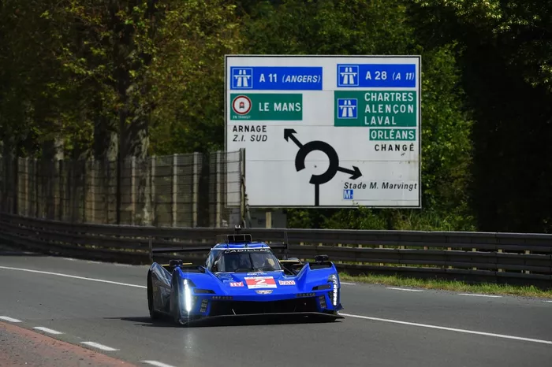
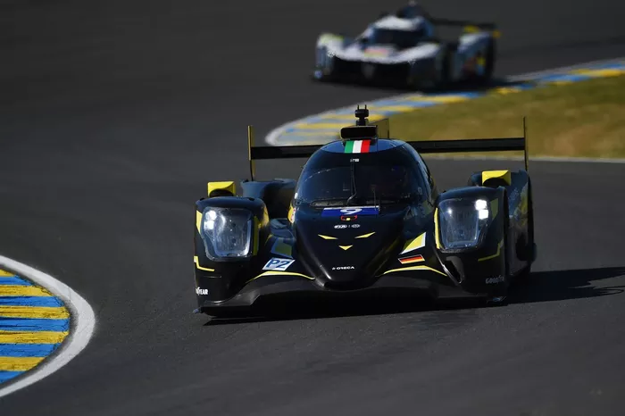
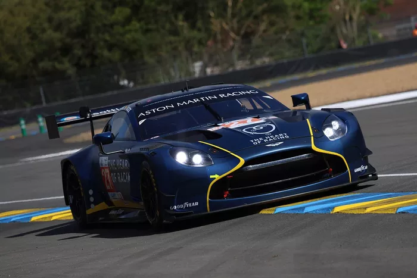

24h De LeMans
 As 24 Horas de Le Mans é uma das mais tradicionais corridas automobilísticas do mundo e a principal prova do Campeonato Mundial de Endurance da FIA.
É apontada como a maior corrida do planeta. A prova de resistência que dura 24 horas é disputada anualmente desde 1923, no Circuit de la Sarthe, em França.
O circuito tem uma extensão de 13 626 metros, usa parte do Circuito Bugatti e é em grande parte composto por estrada nacional.
As mais célebres passagens são as curvas de Tertre Rouge, Mulsanne, Arnage, Casa Branca (Maison Blanche) e, principalmente, a reta de Hunaudières:
extensão de 5 km onde os protótipos mantém uma velocidade de mais de 400 km/h durante um minuto.
Esta porção do circuito foi dividida em três trechos graças à instalação de duas chicanes em 1990.
Essa medida foi necessária porque alguns automóveis insuficientemente carregados aerodinamicamente, para poderem atingir uma maior velocidade, acabavam tendo a tendência de levantar voo nesse trecho.
Agravava ainda o fato de que, quando rodavam em velocidades próximas aos 400 km/h (o recorde estabelecido foi de 405 km/h por um WM-Peugeot em 1988), os pneus eram submetidos a pressões muito intensas, que os levavam a deformações extremas e ao rebentamento se não estivessem em boas condições.
A situação era ainda pior visto que esse tipo de situação podia acontecer de noite e em meio a carros de GT, que rodam cerca de 100 a 150 km/h mais devagar.
As 24 Horas de Le Mans é uma das mais tradicionais corridas automobilísticas do mundo e a principal prova do Campeonato Mundial de Endurance da FIA.
É apontada como a maior corrida do planeta. A prova de resistência que dura 24 horas é disputada anualmente desde 1923, no Circuit de la Sarthe, em França.
O circuito tem uma extensão de 13 626 metros, usa parte do Circuito Bugatti e é em grande parte composto por estrada nacional.
As mais célebres passagens são as curvas de Tertre Rouge, Mulsanne, Arnage, Casa Branca (Maison Blanche) e, principalmente, a reta de Hunaudières:
extensão de 5 km onde os protótipos mantém uma velocidade de mais de 400 km/h durante um minuto.
Esta porção do circuito foi dividida em três trechos graças à instalação de duas chicanes em 1990.
Essa medida foi necessária porque alguns automóveis insuficientemente carregados aerodinamicamente, para poderem atingir uma maior velocidade, acabavam tendo a tendência de levantar voo nesse trecho.
Agravava ainda o fato de que, quando rodavam em velocidades próximas aos 400 km/h (o recorde estabelecido foi de 405 km/h por um WM-Peugeot em 1988), os pneus eram submetidos a pressões muito intensas, que os levavam a deformações extremas e ao rebentamento se não estivessem em boas condições.
A situação era ainda pior visto que esse tipo de situação podia acontecer de noite e em meio a carros de GT, que rodam cerca de 100 a 150 km/h mais devagar.
 on X.jpeg) As 24 Horas de Le Mans possuem várias categorias de carros, cada uma com características e especificações distintas. Essas categorias ajudam a organizar a corrida e proporcionam competições emocionantes entre diferentes tipos de veículos. Vamos explorar as principais categorias:
1. LMP (Le Mans Prototype)
LMP1: Esta era a classe principal até 2020. Os carros LMP1 são protótipos de alta tecnologia, com potência significativa e eficiência aerodinâmica. Essa classe inclui tecnologias híbridas, onde os carros podem ter motores de combustão interna combinados com sistemas elétricos.
LMP2: Uma categoria de protótipos mais acessível, LMP2 possui restrições orçamentárias e de tecnologia. Os carros são projetados para oferecer um equilíbrio entre desempenho e custo, e são frequentemente utilizados por equipes privadas.
2. GTE (Grand Touring Endurance)
GTE Pro: Esta classe é destinada a equipes profissionais e fabricantes que competem com carros de turismo esportivos modificados. Os carros GTE Pro devem se basear em modelos de produção, mas podem ter modificações extensas para desempenho. Exemplos incluem o Ferrari 488 GTE e o Porsche 911 RSR.
GTE Am: Esta categoria é voltada para equipes amadoras, onde os pilotos devem ter menos experiência em competições de alto nível. Os carros GTE Am são semelhantes aos GTE Pro, mas geralmente são modelos mais antigos e/ou usados.
3. Cup e GT (Gran Turismo)
Além das categorias GTE, existem várias subdivisões de GT em competições que ocorrem durante as 24 Horas de Le Mans, onde modelos esportivos de marcas conhecidas competem.
4. Carros Elétricos e Híbridos
5. Classes Históricas
Ao longo da história das 24 Horas de Le Mans, outras categorias existiram, como os carros de turismo e protótipos de várias classes. Embora muitos tenham sido descontinuados, eles tiveram um papel importante na evolução da corrida.
As categorias de carros nas 24 Horas de Le Mans refletem a diversidade do automobilismo e a inovação tecnológica. Cada classe oferece desafios únicos e incentiva a competição entre diferentes tipos de veículos, tornando a corrida emocionante e imprevisível. Se você quiser mais informações sobre uma categoria específica ou seus carros, é só avisar!
As 24 Horas de Le Mans possuem várias categorias de carros, cada uma com características e especificações distintas. Essas categorias ajudam a organizar a corrida e proporcionam competições emocionantes entre diferentes tipos de veículos. Vamos explorar as principais categorias:
1. LMP (Le Mans Prototype)
LMP1: Esta era a classe principal até 2020. Os carros LMP1 são protótipos de alta tecnologia, com potência significativa e eficiência aerodinâmica. Essa classe inclui tecnologias híbridas, onde os carros podem ter motores de combustão interna combinados com sistemas elétricos.
LMP2: Uma categoria de protótipos mais acessível, LMP2 possui restrições orçamentárias e de tecnologia. Os carros são projetados para oferecer um equilíbrio entre desempenho e custo, e são frequentemente utilizados por equipes privadas.
2. GTE (Grand Touring Endurance)
GTE Pro: Esta classe é destinada a equipes profissionais e fabricantes que competem com carros de turismo esportivos modificados. Os carros GTE Pro devem se basear em modelos de produção, mas podem ter modificações extensas para desempenho. Exemplos incluem o Ferrari 488 GTE e o Porsche 911 RSR.
GTE Am: Esta categoria é voltada para equipes amadoras, onde os pilotos devem ter menos experiência em competições de alto nível. Os carros GTE Am são semelhantes aos GTE Pro, mas geralmente são modelos mais antigos e/ou usados.
3. Cup e GT (Gran Turismo)
Além das categorias GTE, existem várias subdivisões de GT em competições que ocorrem durante as 24 Horas de Le Mans, onde modelos esportivos de marcas conhecidas competem.
4. Carros Elétricos e Híbridos
5. Classes Históricas
Ao longo da história das 24 Horas de Le Mans, outras categorias existiram, como os carros de turismo e protótipos de várias classes. Embora muitos tenham sido descontinuados, eles tiveram um papel importante na evolução da corrida.
As categorias de carros nas 24 Horas de Le Mans refletem a diversidade do automobilismo e a inovação tecnológica. Cada classe oferece desafios únicos e incentiva a competição entre diferentes tipos de veículos, tornando a corrida emocionante e imprevisível. Se você quiser mais informações sobre uma categoria específica ou seus carros, é só avisar!



Os carros que competem nas 24 Horas de Le Mans representam o ápice da tecnologia automobilística, combinando desempenho, durabilidade e inovação.
Cada edição da corrida traz novos desafios e oportunidades para os fabricantes e equipes, tornando-a um espetáculo emocionante e uma vitrine para as mais recentes inovações do setor.